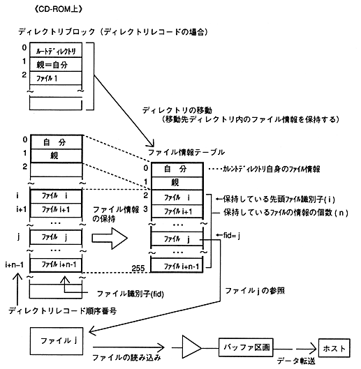

Return to previous page ｜ Return to menu ｜ Go to next page
-
6.2 CD block file system functions
- The CD block file system (hereinafter abbreviated as file system) has the following functions. (Available only for GAME-CD)
-
(1) Directory movement (CDC_ChgDir) and file information retention (CDC_ReadDir)
- Moves to the specified directory and stores the file information in that directory in the file information table inside the CD block.
-
(2) Get retained file information (CDC_GetFileScope, CDC_TgetFileInfo)
- Acquires the range of the file information that is stored and retrieves the contents of the file information table.
-
(3) Read file (CDC_ReadFile)
- Reads the sector data of the file into the CD buffer based on the stored file information. The host can retrieve the read sector data by data transfer.
-
(4) Abort file access (CDC_AbortFile)
- Stops moving the directory, retaining file information, and reading the file. When the file access is canceled, the CD block pauses the CD drive.

Figure 6.2 CD block file system structure
Return to previous page ｜ Return to menu ｜ Go to next page